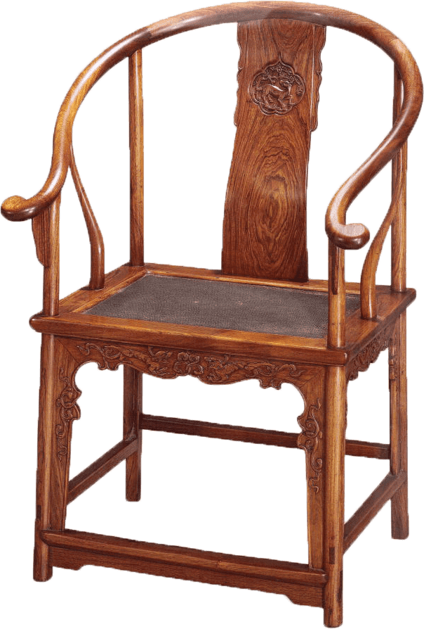

古时床与榻的功能近似，都是可卧可坐的家具，不过床、榻是两种卧具类型，形制上并不相同，功能上也有微妙的差异。 宋代的床，主要是摆放在卧室供睡觉用的卧具，具有一定的私密性，而榻则是安放在书房、客厅的坐具，具有陈设的功能，更注意装饰与美观， 当然也可以用来躺卧憩息。宋榻有点像现代家具中的沙发，宋人的书房和客厅都少不了这样的一坐榻。


在矮形家具时代，并没有桌，只有案，案是低矮的承具，有食案、书案、棋案、香案、画案等，到了高型家具时代，才出现了高脚的桌， 如饭桌、书桌、棋桌、画桌，等等。案与桌的功能相近，但造型和用途还是略有区别，案的支架是四条腿，案往往保留着框状支架，桌越来越注重实用功能， 案越来越注重陈设功能，在我们的语言习惯中，【案】更雅一些，而【桌】更俗一些。
-
玫瑰椅
玫瑰椅的特点是靠背低矮，多数与扶手齐平，可视为明清玫瑰椅的前身。 玫瑰椅的结构简练，构件多细瘦有力，几乎将框架式结构精简到极致，故而没有材料与工艺上的浪费。如《十八学士图 观画》中的玫瑰椅就十分典型，全以结构为主，没有加固和装饰。 根据椅身和承足的关系，宋代玫瑰椅主要有以下四种类型：椅前无足承、椅前配置足承，椅前配置足承，椅子与椅足连为一体的足承、椅子与椅足扶手连为一体的足承。
-
交椅
两宋时期战事频发，因而能折叠、轻盈、搬运方便的马扎（胡床）被人们经常使用。然而马扎不能倚靠，宋人进行了改进, 吸收了圈椅上半部的特征,增加了靠背和扶手。交椅最大的特点是体轻,腿部交叉，可折叠,便于携带，适合长途跋涉之后的休憩使用。 行军打仗、打猎出游都可以使用,所以也有:行椅、猎椅之称谓。当位高权重者参加活动的时候,需要人扛着交椅一路跟着， 当他累了就坐于其上歇着,别人是不能坐的,如《春游晚归图》中的情景,久而久之，交椅甚至成为了地位与权力的象征。
-
圈椅
圈椅源头可以看作是上古时期的弧形三足凭几,在唐代定型。圈椅的造型特征为天圆地方，搭脑与扶手顺势缓行而下， 有的扶手末端再向后反卷,造型趋于完美。圈椅的椅背多做成适应人体脊椎的S型曲线，人坐靠时能得到充分的休息。 宋代圈椅有两种结构,一是在竖直木条的支撑下形成椅圈,以《折槛图》中的圈椅为代表;第二种是在前后腿的向上延展部分和靠背支撑下形成的椅圈, 以《会昌九老图》中的圈椅为代表，宋代圈椅奠定了后来明式圈椅的发展基础。
-
凳

凳是一种无靠背的有足坐具，其历史由来已久,在宋代得到了较大的发展。“床凳之凳,晋已有此器。”凳在宋代被称作橙,也称凳子为兀子。 以形状分为长凳、方凳、圆凳和月牙凳。除此外，还有小板凳、树根凳、折叠凳等。凳的形象可以在《撵茶图》《博古图》等画中见到。
-
墩

《宋史》记载:遂赐坐。左右欲设墩,（丁）谓顾曰:“有旨复平章事。乃更以机进,即入中书视事如故”。 墩是一种伴随着高坐起居方式发展而流行起来的坐具。墩与凳的区别在于,墩是堆状的,其造型大多圆实厚重。 宋初，在朝廷上墩还是高级官员作为特殊待遇的坐具。根据形状可分为鼓墩、圆墩、方墩、绣墩、藤墩等。《却坐图》中的绣墩堪称精美。
-
两宋时期，屏风的使用更加普遍，与其他家具搭配使用，具有局域装饰及区隔空间的作用。 宋代社会风气尚俭，所以屏风以素雅、简洁、实用为主。装饰上以书法、绘画、水波纹、圆形图案为主，尤其以书画屏最为盛行，极具人文气息。